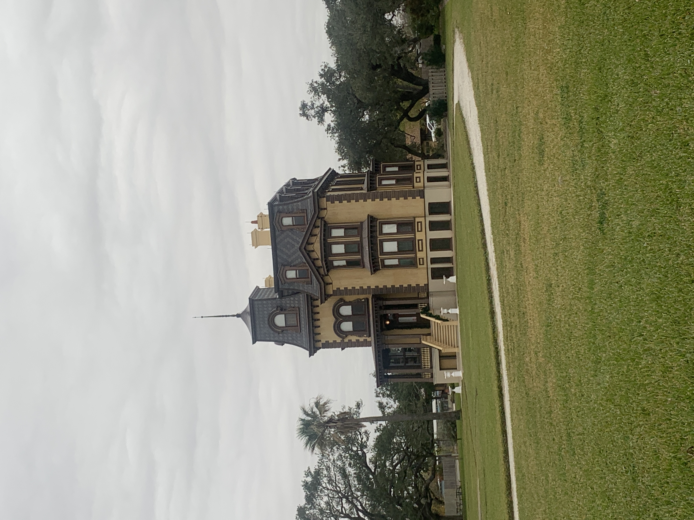
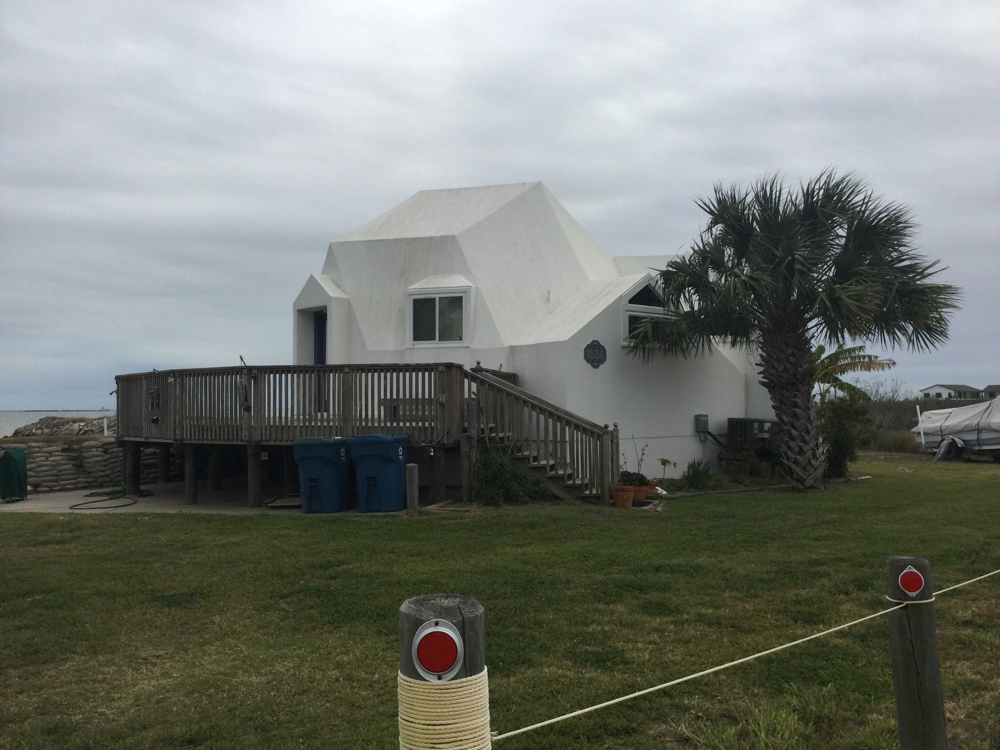
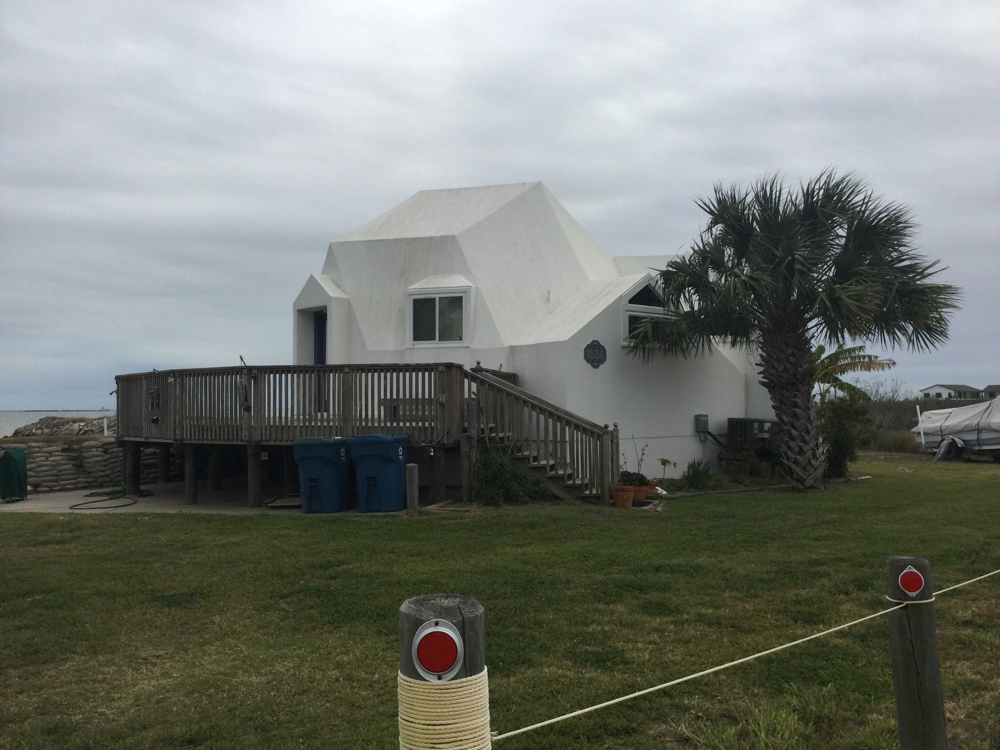

Recent Projects
Nationwide
Conducted and aided in the completion of several telecommunications projects throughout the United States. This work has included historic property research and report writing via the approved FCC 620 and 621 forms in compliance with the FCC’s Programmatic agreement for collocations and raw land sites. Projects were completed in the following states: Alabama, Virginia, New York, Georgia, Pennsylvania, Washington, D.C, Massachusetts, Montana, and Washington.
South Dakota
Completed archival research and contextual histories for multiple counties in South Dakota as part of an architectural reconnaissance survey.
Texas
Assisted with the survey and documentation of approximately 1,000 properties located within Aransas and Refugio Counties. This project is part of an architectural reconnaissance survey of the remaining historic fabric in the areas hit hardest by Hurricane Harvey.
 

West Virginia
Assisted with the survey and documentation of approximately 500 properties located within the rural West Virginia counties of Clay, Lewis, Upshur, and Webster as part of an extensive architectural reconnaissance survey. Completed archival and historical research to complete contextual histories for each county.